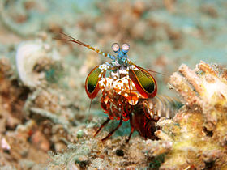
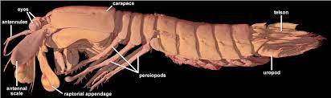
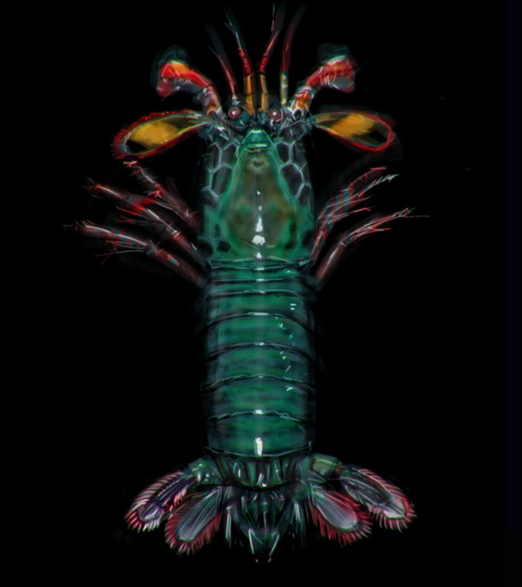

Quem é Odontodactylus scyllarus ou Stomatopoda
O camarão-louva-a-deus-palhaço (Odontodactylus scyllarus), também conhecido como lagosta-boxeadora é uma espécie de tamarutaca nativa do Indo-Pacífico, de Guam até a África Oriental. Em aquários de água salgada, é uma atração tanto pela coloração quanto pelo perigo.
Fatos sobre o Stomatopoda
-
Possuem uma visão incrível;
-
Possuem um soco poderoso;
-
São exclusivamente carnívoros;
-
O segundo par de patas é muito desenvolvido.
Descubra mais sobre o Stomatopoda
Referências
- Nature’s Most Amazing Eyes Just Got A Bit Weirder
- Odontodactylus scyllarus